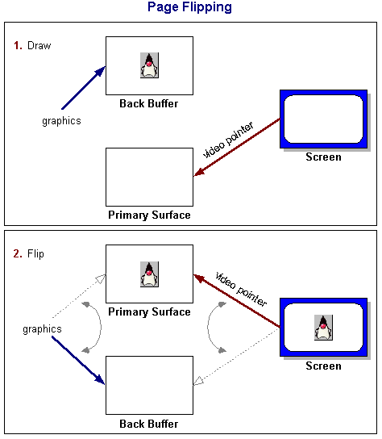

Feedback Form
|
|
Start of Tutorial > Start of Trail > Start of Lesson |
Search
Feedback Form |
Suppose you had to draw an entire picture on the screen, pixel by pixel or line by line. If you were to draw such a thing directly to the screen (using, say, Graphics.drawLine), you would probably notice with much disappointment that it takes a bit of time. You will probably even notice visible artifacts of how your picture is drawn. Rather than watching things being drawn in this fashion and at this pace, most programmers use a technique called double-buffering.The traditional notion of double-buffering in Java applications is fairly straightforward: create an offscreen image, draw to that image using the image's graphics object, then, in one step, call drawImage using the target window's graphics object and the offscreen image. You may have already noticed that Swing uses this technique in many of its components, usually enabled by default, using the setDoubleBuffered method.
The screen surface is commonly referred to as the primary surface, and the offscreen image used for double-buffering is commonly referred to as the back buffer. The act of copying the contents from one surface to another is frequently referred to as a block line transfer, or blitting (blt is typically pronounced "blit" and shouldn't be confused with a BLT sandwich).
The primary surface is usually manipulated through the graphics object of any showing component; when in full-screen mode, any operation using the graphics of the full-screen window is a direct manipulation of screen memory. For this reason, you can take advantage of other capabilities in full-screen exclusive mode that may otherwise be unavailable due to the overhead of the windowing system. One such technique that is only available in full-screen exclusive mode is a form of double-buffering called page-flipping.
Page Flipping
Many graphics cards have the notion of a video pointer, which is simply an address in video memory. This pointer tells the graphics card where to look for the contents of the video to be displayed during the next refresh cycle. In some graphics cards and on some operating systems, this pointer can even be manipulated programmatically. Suppose you created a back buffer (in video memory) of the exact width, height, and bit depth of the screen, then drew to that buffer the same way as you would using double-buffering. Now imagine what would happen if, instead of blitting your image to the screen as in double-buffering, you simply changed the video pointer to your back buffer. During the next refresh, the graphics card would now use your image to display. This switch is called page-flipping, and the performance gain over blt-based double-buffering is that only a single pointer needs to be moved in memory as opposed to copying the entire contents from one buffer to another.
When a page flip occurs, the pointer to the old back buffer now points to the primary surface and the pointer to the old primary surface now points to the back buffer memory. This sets you up automatically for the next draw operation.
 Sometimes it is advantageous to set up multiple back buffers in a flip chain. This is particularly useful when the amount of time spent drawing is greater than the monitor's refresh rate. A flip chain is simply two or more back buffers (sometimes called intermediary buffers) plus the primary surface (this is sometimes called triple-buffering, quadruple-buffering, etc.). In a flip chain, the next available back buffer becomes the primary surface, etc., all the way down to the rearmost back buffer that is used for drawing.
Benefits of Double-Buffering and Page-Flipping
If your performance metric is simply the speed at which double-buffering or page-flipping occurs versus direct rendering, you may be disappointed. You may find that your numbers for direct rendering far exceed those for double-buffering and that those numbers far exceed those for page-flipping. Each of these techniques is for used for improving perceived performance, which is much more important in graphical applications than numerical performance.Double-buffering is used primarily to eliminate visible draws which can make an application look amateurish, sluggish, or appear to flicker. Page-flipping is used primarily to also eliminate tearing, a splitting effect that occurs when drawing to the screen happens faster than the monitor's refresh rate. Smoother drawing means better perceived performance and a much better user experience.
|
|
Start of Tutorial > Start of Trail > Start of Lesson |
Search
Feedback Form |
Copyright 1995-2004 Sun Microsystems, Inc. All rights reserved.